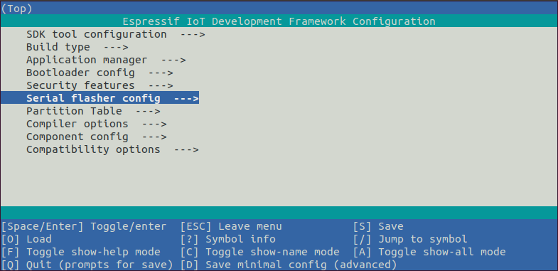

Программирование устройств на основе модуля ESP32
26 мин155K
Блог компании EPAMC*Программирование микроконтроллеров*Разработка под Arduino*Интернет вещей
Микроконтроллер — это интегральная схема, способная выполнять программы. Сегодня на рынке представлено множество таких моделей от самых разных производителей. Цены на эти устройства продолжают падать. Однокристальные чипы находят широкое применение в самых разнообразных сферах: от измерительных приборов до изделий развлечений и всевозможной домашней техники. В отличие от персональных компьютеров микроконтроллер сочетает в одном кристалле функции процессора и периферийных устройств, содержит оперативную память и постоянное запоминающее устройство в для хранения кода и данных, однако обладает значительно мешьшими вычислительными ресурсами. ESP32 — это микроконтроллер, разработанный компанией Espressif Systems. ESP32 представляет собой систему на кристалле с интегрированным Wi-Fi и Bluetooth контроллерами. В серии ESP32 используется ядро Tensilica Xtensa LX6. Платы с ESP32 обладают хорошей вычислительной способностью, развитой периферией и при этом весьма популярны ввиду низкой цены в диапазоне 7$ – 14$: Aliexpress, Amazon.
Данная статья не претендует на роль исчерпывающего руководства, скорее представляет собой сборник источников материала и рекомендаций. Я затрону вопросы, с которыми мне пришлось столкнуться при выборе программных средств для разработки проекта, а также некоторые кейсы практического применения модулей ESP32. В следующей статье я покажу наглядный пример использования ESP32 в качестве котроллера управления для небольшой двухколесной мобильной платформы. А в этом материале мы рассмотрим:
Выбор среды разработки;
Настройку рабочего окружения, компиляцию и загрузку проекта ESP-IDF;
Обработку сигналов ввода/вывода GPIO;
Широтно-импульсную модуляцию с использованием модуля MCPWM;
Аппартный счетчик PCNT;
Подключение к WI-Fi и MQTT.
Обзор модуля ESP32-WROOM-32E
Согласно datasheet модуль содержит:
MCU
ESP32-D0WD-V3 embedded, Xtensa dual-core 32-bit LX6 microprocessor, up to 240 MHz
448 KB ROM for booting and core functions
520 KB SRAM for data and instructions
16 KB SRAM in RTC
Wi-Fi
802.11b/g/n
Bit rate: 802.11n up to 150 Mbps
A-MPDU and A-MSDU aggregation
0.4 µs guard interval support
Center frequency range of operating channel: 2412 ~ 2484 MHz
Bluetooth
Bluetooth V4.2 BR/EDR and Bluetooth LE specification
Class-1, class-2 and class-3 transmitter
AFH
CVSD and SBC
Hardware
Interfaces: SD card, UART, SPI, SDIO, I 2 C, LED PWM, Motor PWM, I 2 S, IR, pulse counter, GPIO, capacitive touch sensor, ADC, DAC
40 MHz crystal oscillator
4 MB SPI flash
Operating voltage/Power supply: 3.0 ~ 3.6 V
Operating temperature range: –40 ~ 85 °C
Dimensions: See Table 1
Certification
Bluetooth certification: BQB
RF certification: FCC/CE-RED/SRRC
Green certification: REACH/RoHS
Функциональная блок-диаграмма
Подробнее с особенностями микроконтроллера можно ознакомиться в Википедии.
В основе модуля лежит микросхема ESP32-D0WD-V3 *. Встроенный чип разработан с учетом возможности масштабирования и адаптации. Центральный процессор содержит два ядра, которыми можно управлять индивидуально, а тактовая частота ЦП регулируется от 80 МГц до 240 МГц. Чип также имеет сопроцессор с низким энергопотреблением, который можно использовать вместо ЦП для экономии энергии при выполнении задач, не требующих больших вычислительных мощностей, таких как мониторинг состояния пинов. ESP32 объединяет богатый набор периферийных устройств, начиная от емкостных сенсорных датчиков, датчиков Холла, интерфейса SD-карты, Ethernet, высокоскоростного SPI, UART, I²S и I²C.
Техническая документация представлена на официальном ресурсе.
Информацию про распиновку модуля ESP-WROOM-32 можно легко найти на просторах сети. Например здесь
Выбор среды разработки
Arduino IDE
Микроконтроллеры семейства AVR, а затем и платформа Arduino появились задолго до ESP32. Одной из ключевых особенностей Arduino является относительно низкий порог вхождения, позволяющий практически любому человеку создать решение быстро и легко. Платформа сделала важный вклад в open source hardware сообщество и позволила приобщиться к нему огромному числу радиолюбителей. Среду разработки Arduino IDE можно свободно скачать с официального сайта . Не смотря на очевидные ограничения по сравнению с профессиональной средой разработки, Arduino IDE покрывает 90% из того, что требуется достичь для любительских проектов. В сети также имеется достаточное количество статей на тему установки и настройки Arduino IDE для программирования модулей ESP32, например: Arduino core for the ESP32, habr.com, voltiq.ru и randomnerdtutorials.com.
Программируя ESP32 в среде Arduino необходимо учитывать распиновку, как указано на странице arduino-esp32.
Распиновка модуля ESP32
Основное преимущество данного подхода разработки заключается в быстром вхождении и легкости создания проектов, с помощью тех же принципов и многих библиотек, что и для Arduino. А также использование многих библиотек, как и для Arduino. Еще одной полезной особенностью является возможность совмещать библиотеки и принципы разработки Arduino с оригинальным ESP-IDF фреймворком.
PlatformIO
Как сказано на официальном ресурсе платформы: «Cross-platform PlatformIO IDE and Unified Debugger · Static Code Analyzer and Remote Unit Testing. Multi-platform and Multi-architecture Build System · Firmware File Explorer and Memory Inspection» Иными словами PlatformIO – это экосистема для разработки встроенных устройств, поддерживающая множество платформ, включая Arduino и ESP32. В качестве IDE используется Visual Studio Code или Atom. Установка и настройка достаточно простая – после установки редактора кода выбираем PlatformIO из списка плагинов и устанавливаем. В сети есть много материалов на данную тему, начиная от официального источника здесь и здесь, и продолжая статьями с подробными иллюстрациями здесь и здесь.
PlatformIO по сравнению с Arduino IDE обладает всеми качествами современной среды разработки: организация проектов, поддержка плагинов, автодополнение кода и многое другое.
Особенностью разработки на PlatformIO является унифицированная структура проекта для всех платформ
project_dir
├── lib
│ └── README
├── platformio.ini
└── src
└── main.cpp
Каждый проект PlatformIO содержит файл конфигурации с именем platformio.ini в корневом каталоге проекта. platformio.ini имеет разделы (каждый из которых обозначен [заголовком]) и пары: «ключ / значение» внутри разделов. Строки, начинающиеся с символа точка с зяпятой «;» игнорируются и могут использоваться для комментариев. Параметры с несколькими значениями можно указать двумя способами:
Следующей фичей разработки для ESP32 является возможность выбора фреймворка: Arduino или ESP-IDF. Выбирая Arduino в качестве фреймворка мы получаем ранее описанные преимущества разработки.
В состав PlatformIO входит удобный инструментарий билда, загрузки и отладки проектов
Espressif IoT Development framework
Для ESP32 компания Espressif разработала фреймворк под названием IoT Development Framework, известный как «ESP-IDF». Его можно найти на Github. Проект содержит очень хорошую документацию и снабжен примерами, которые можно брать за базу. Установка и настройка среды окружения хорошо описана в разделе Get Started. Имеется несколько вариантов установки и работы с фреймворком.
Клонирование проекта из репозитория и ручная установка утилит.
Клонирование проекта из Github
mkdir -p ~/esp
cd ~/esp
git clone --recursive https://github.com/espressif/esp-idf.git
Для Windows установка утилит разработки возможна с помощью инсталлятора или с помощью скриптов для командной строки:
cd %userprofile%\esp\esp-idf
install.bat
Для PowerShell
cd ~/esp/esp-idf
./install.ps1
Для Linux и macOS
cd ~/esp/esp-idf
./install.sh
Следующим шагом является настройка переменных окружений среды. Если установка инструментов разработки была выполнена на Windows с помощью инсталлятора, то ярлык на командную консоль добавляется в меню и на рабочий стол, после чего можно открывать командную оболочку и работать с проектами. Альтернативный спрособ запуска командной оболочки для Windows:
%userprofile%\esp\esp-idf\export.bat
или Windows PowerShell:
.$HOME/esp/esp-idf/export.ps1
Linux и macOS:
. $HOME/esp/esp-idf/export.sh
Следует обратить внимание на пробел между точкой и путем к скрипту
Далее в руководстве рекомендуется добавить алиас на скрипт настройки переменных окружения в пользовательский профиль, если работа производится в системе Linux или macOS. Для этого необходимо скопировать и вставить следующую команду в профиль своей оболочки (.profile, .bashrc, .zprofile, и т.д.):
alias get_idf='. $HOME/esp/esp-idf/export.sh'
Вызывая команду get_idf в консоль экспортируются необходимы переменные окружения. В моем случае также необходимо было прописать алиас на запуск виртуального окружения python.
alias esp_va=’source $HOME/.espressif/python_env/idf4.2_py2.7_env/bin/activate’
А также добавить esp_va в следующий алиас
alias get_idf='esp_ve && . $HOME/esp/esp-idf/export.sh'
Для создание нового проекта с нуля можно склонировать исходники с github.com или скопировать из каталога с примерами esp-idf/examples/get-started/hello_world/.
Информация о структуре проекта, утилитах компиляции, загрузки, настройки и так далее находится здесь.
Проект представляет собой каталог со следующей структурой:
- myProject/
- CMakeLists.txt
- sdkconfig
- components/ - component1/ - CMakeLists.txt
- Kconfig
- src1.c
- component2/ - CMakeLists.txt
- Kconfig
- src1.c
- include/ - component2.h
- main/ - CMakeLists.txt
- src1.c
- src2.c
- build/
Конфигурация проекта содержится в файле sdkconfig в корневом каталоге. Для изменения настроек необходимо вызвать команду idf.py menuconfig (или idf.py.exe menuconfig в Windows).
В одном проекте обычно создаются два приложения — «project app» (основной исполняемый файл, то есть ваша кастомная прошивка) и «bootloader app» (программа начального загрузчика проекта).
«components» — это модульные части автономного кода, которые компилируются в статические библиотеки (файлы .a) и связаны с приложением. Некоторые из них предоставляются самой ESP-IDF, другие могут быть получены из иных источников.
Утилита командной строки idf.py предоставляет интерфейс для простого управления сборками проекта. Ее расположение в Windows — %userprofile%\.espressif\tools\idf-exe\1.0.1\idf.py.exe. Она управляет следующими инструментами:
Каждый проект имеет один файл CMakeLists.txt верхнего уровня, который содержит параметры сборки для всего проекта. Минимальная конфигурация файла включает следующие необходимые строчки:
cmake_minimum_required(VERSION 3.5)
include($ENV{IDF_PATH}/tools/cmake/project.cmake)
project(myProject)
Проект ESP-IDF можно рассматривать как совокупность компонентов, в котором каталог main является главным комонентом, запускающим код. Поэтому в данной директории также содержится файл CMakeLists.txt. Чаще всего его структура подобна:
idf_component_register(SRCS "main.c" INCLUDE_DIRS ".")
В ней указывается, что исходный файл main.c необходимо зарегистрировать для компонента, а файлы заголовков содержатся в текущем каталоге. При необходимости можно переименовать каталог main, установив EXTRA_COMPONENT_DIRS в прокте CMakeLists.txt. Подробно можно ознакомиться здесь.
Помимо этого в каталоге находится исходный main.с (имя может быть любое) файл с точкой входа – функцией void app_main(void).
Кастомые компоненты создатся в каталоге components. Подробнее процесс описан в разделе Component Requirements.
Подключение модуля ESP32 к компьютеру в большинстве случаев производится с помощью USB-кабеля подобно платам Arduino за счет имеющегося бутлоадера. Подробнее процесс описан здесь. Едиственное, что необходимо – это наличие драйвера конвертора USB to UART в системе, который можно скачать по ссылкам из приведенного источника. После установки драйвера, необходимо определить номер COM-порта в системе для загрузки скомпилированной прошивки в модуль.
Конфигурирование проекта.
В большинстве случаев подходят настройки по умолчанию. Но для вызова консольного интерфейса меню необходимо перейти в каталог проекта и в командной строке набрать:
idf.py menuconfig

Меню с конфигурационными настройками
После вызова этой команды файл sdkconfig будет создан, если его ранее не было или он заново сконфигурирован. В более ранних обучающих материалах можно встретить команды make menuconfig, которые являются устаревшими.
Добавление кастомных настроек в файл sdkconfig возможно вручную, например:
#
# WiFi Settings кастомное меню
#
CONFIG_ESP_HOST_NAME="имя точки"
CONFIG_ESP_WIFI_SSID="название точки доступа"
CONFIG_ESP_WIFI_PASSWORD="пароль"
Но предпочтительным является способ с помощью дополнительного конфигурационного файла Kconfig.projbuild, который необходимо располагать в каталоге с компонентом. Содержимое файла может быть следующим:
# put here your custom config value
menu "Example Configuration"
config ESP_WIFI_SSID
string "Keenetic"
default "myssid"
help
SSID (network name) for the example to connect to.
config ESP_WIFI_PASSWORD
string "password"
default "mypassword"
help
WiFi password (WPA or WPA2) for the example to use.
endmenu
После вызова команды idf.py menuconfig в файле sdkconfig автоматически добавиться дополнительный раздел. Вызов команды idf.py menuconfig возможен и в проекте PlatformIO, однако, нужно учитывать факт отличия структуры проекта PlatformIO от классического ESP-IDF, из-за чего файл sdkconfig может заново сгенерироваться и потерять кастомные настройки. Тут возможны вышеупомянутые варианты: правка файла руками, временное переименование каталога src в main или настройка файла CMakeLists.txt
Компиляция и загрузка проекта.
Для билда проекта необходимо набрать команду
idf.py build
Эта команда скомпилирует приложение и все компоненты ESP-IDF, а затем сгенерирует загрузчик, таблицу разделов и двоичные файлы приложения.
$ idf.py build
Running cmake in directory /path/to/hello_world/build
Executing "cmake -G Ninja --warn-uninitialized /path/to/hello_world"...
Warn about uninitialized values.
-- Found Git: /usr/bin/git (found version "2.17.0")
-- Building empty aws_iot component due to configuration
-- Component names: ...
-- Component paths: ...
... (more lines of build system output)
[527/527] Generating hello-world.bin
esptool.py v2.3.1
Project build complete. To flash, run this command:
../../../components/esptool_py/esptool/esptool.py -p (PORT) -b 921600 write_flash --flash_mode dio --flash_size detect --flash_freq 40m 0x10000 build/hello-world.bin build 0x1000 build/bootloader/bootloader.bin 0x8000 build/partition_table/partition-table.bin
or run 'idf.py -p PORT flash'
Следует учитывать, что первоначальный процесс компиляции даже простого проекта занимает время, так как, в отличие от Arduino фреймворка компилируются многие дополнительные модули ESP-IDF. Дальнейшее изменение исходников приводит только к компиляции этих же файлов. Исключение составляет изменение конфигурации.
Для загрузки скомпилированных двоичных файлов (bootloader.bin, partition-table.bin и hello-world.bin) на плату ESP32 необходимо запустить команду
idf.py -p PORT [-b BAUD] flash
где PORT мы заменяем на тот, что нам нужно (COM1, /dev/ttyUSB1), а также опционально можем изменить скорость загрузки, указав необходимое значение для BAUD
Для отслеживания загруженной программы можно использовать любую утилиту мониторинга com-порта, такие как HTerm, CoolTerm, или использовать утилиту мониторинга IDF Monitor, для запуска которой необходимо ввести команду
idf.py -p PORT monitor
ESP-IDF Eclipse Plugin
Документация по установке и настройке плагина находится здесь
Предустановки для использования:
Плагин довольно неплохо интегрирован в среду разработки и, автоматизирует львиную долю функционала. Но, к сожалению, не без ложки дегтя. В Eclipse версиях позже 2019-09 в ESP-IDF проектах в Windows до сих пор присутствует баг с индексированием исходных файлов.
Кроме этого наблюдаются и другие сбои, когда проект просто не билдится по непонятным причинам. Помогает только закрытие проекта и перезагрузка Eclipse.
ESP-IDF Visual Studio Code Extension
И последний, на мой взгляд, самый интересный вариант – это официальный плагин для Visual Studio Code.
Как и PlatformIO, он легко устанавливается из раздела расширений. Установка и настройка ESP-IDF фреймворка в этом расширении представлена в качестве меню onboarding, о чем также говорится в описании. Загрузка и установка всех компонентов происходит автоматически в процессе прохождения этапов меню. Можно привести все скрины процесса, но они интуитивно понятны, и практически не требуют пояснения. В пользу PlatformIO можно отметить более удобный инструментарий билда, загрузки и мониторинга проекта. В отличие от этого ESP-IDF плагин управляется с помощью меню команд, которое можно вызвать с помощью клавиши F1 или сочетания клавиш, описанных в мануале.
Первоначальная настройка плагина
Преимущество использования плагина состоит в том, что соблюдается классическая структура проекта, нет необходимости как-то еще «шаманить» с настройками (в PlatformIO такая необходимость возникает). Есть один нюанс: если мы хотим открыть ранее созданный проект в Visual studio code с ESP-IDF плагином, то нам всего лишь необходимо скопировать в корень с проектом каталог .vscode, который можно получить, сгенерировав хотя бы один раз шаблонный проект с помощью ESP-IDF плагина.
Меню команд
FreeRTOS
Согласно Википедии FreeRTOS — многозадачная операционная система реального времени (ОСРВ) для встраиваемых систем. FreeRTOS обеспечивает мультизадачность за счет совместного использования процессорного времени всеми потоками или, в терминологии ОС, задачами (task). На мой взгляд, наиболее полное и внятное руководство по FreeRTOS на русском находится здесь. На языке оригинала мануалы можно изучить из официального источника. Я лишь приведу рисунок состояния задач.
FreeRTOS была портирована на широкий спектр аппаратных платформ, включая процессоры Xtensa, используемые в ESP32. Подробнее можно ознакомиться в документации.
GPIOs
GPIO или универсальный ввод/вывод – это возможность дискретного управления пина сигналом «1» или «0».
Как видно из самого названия, такие пины имеют два рабочих режима: ввод или вывод. В первом случае мы читаем значение, во втором – записываем. Еще одним важным фактором при работе с GPIO является уровень напряжения. ESP32 — это устройство с напряжением 3,3 В. Поэтому следует быть осторожным при работе с другими устройствами, которые имеют напряжение 5 В и выше. Также важно понимать, что максимальный ток, которым можно нагружать вывод GPIO, составляет 12 мА. Для использования функций GPIO, предоставляемых ESP-IDF, нам необходимо подключить заголовок driver/gpio.h. Затем можно вызвать gpio_pad_select_gpio(), чтобы указать функцию данного вывода. На ESP32 доступно 34 различных GPIO. Они обозначены как:
Следующая нумерация не входит в число пинов 20, 24, 28, 29, 30 и 31.
Таблицу с распиновкой можно посмотреть здесь.
Следует обратить внимание, что пины GPIO_NUM_34 — GPIO_NUM_39 используют только режим ввода. Их нельзя использовать для вывода сигнала. Кроме того, контакты 6, 7, 8, 9, 10 и 11 используются для взаимодействия с внешней флеш-картой по SPI. Не рекомендуется их использовать для других целей, но если очень хочется, то можно. Тип данных gpio_num_t — это перечисление со значениями, соответствующими номерам пинов. Рекомендуется использовать эти значения, а не числа. Направление пина устанавливается с помощью функции gpio_set_direction (). Например, для установки пина как выход:
gpio_set_direction(GPIO_NUM_17, GPIO_MODE_OUTPUT);
Для установки пина в качестве входа:
gpio_set_direction(GPIO_NUM_17, GPIO_MODE_INPUT);
Если мы настроили GPIO как выход, то можем установить его значение равным 1 или 0, вызывая gpio_set_level ().
Следующий пример переключает GPIO раз в секунду:
gpio_pad_select_gpio(GPIO_NUM_17);
gpio_set_direction(GPIO_NUM_17, GPIO_MODE_OUTPUT);
while(1) {
printf("Off\n");
gpio_set_level(GPIO_NUM_17, 0);
vTaskDelay(1000 / portTICK_RATE_MS);
printf("On\n");
gpio_set_level(GPIO_NUM_17, 1);
vTaskDelay(1000 / portTICK_RATE_MS);
}
В качестве альтернативы настройке всех атрибутов отдельных пинов мы можем установить свойства одного или нескольких контактов с помощью вызова функции gpio_config (). Она принимает в качестве входных данных структуру gpio_config_t и устанавливает направление, pull up, pull down и настройки прерывания для всех выводов, представленных в битовой маске.
Например:
gpio_config_t gpioConfig;
gpioConfig.pin_bit_mask = (1 << 16) | (1 << 17);
gpioConfig.mode = GPIO_MODE_OUTPUT;
gpioConfig.pull_up_en = GPIO_PULLUP_DISABLE;
gpioConfig.pull_down_en = GPIO_PULLDOWN_ENABLE;
gpioConfig.intr_type = GPIO_INTR_DISABLE;
gpio_config(&gpioConfig);
Pull up и pull down настройки
Обычно считается, что входной пин GPIO имеет сигнал высокого или низкого уровня. Это означает, что он подключен к источнику питания или к земле. Однако, если пин не подключен ни к чему, то он находится в «плавающем» (floating) состоянии. Часто необходимо установить начальный уровень неподключенного пина как высокий или низкий. В таком случае производится аппаратная (подключение c помощью резисторов) или программная подтяжка вывода соответственно к +V – pull up или к 0 – pull down. В ESP32 SDK мы можем определить GPIO как pull up или pull down с помощью функции gpio_set_pull_mode (). Эта функция принимает в качестве входных данных номер контакта, который мы хотим установить, и режим подтяжки, связанный с этим контактом.
Например:
gpio_set_pull_mode (21, GPIO_PULLUP_ONLY);
GPIO обработка прерывания
Чтобы обнаружить изменение входного сигнала на пине, мы можем периодически опрашивать его состояние, однако, это не лучшее решение по ряду причин. Во-первых, мы должны циклически делать проверку, тратя процессорное время. Во-вторых, в момент опроса состояние пина может быть уже не актуальное за счет задержки и есть риск пропустить входные сигналы. Решением этих проблем является прерывание. Прерывание похоже на дверной звонок: без него нам придется периодически проверять, есть ли кто-нибудь у двери. В исходном коде мы можем определить функцию обратного вызова прерывания, которая будет вызываться, когда вывод изменяет значение своего сигнала. Мы также можем определить, что является причиной вызова обработчика, установив следующие параметры:
Обработчик прерывания может быть отмечен для загрузки в ОЗУ во время компиляции. По умолчанию сгенерированный код находится во флэш-памяти. Если предварительно пометить его как IRAM_ATTR, он будет готов к немедленному выполнению из оперативной памяти.
void IRAM_ATTR my_gpio_isr_handle(void *arg) {...}
Кто работал с микроконтроллерами, знает, что обработка входных сигналов от кнопок сопровождается дребезгом контактов. Что может интерпретироваться как серия переходов, и следовательно, серия событий обработчика прерывания. Для этого мы должны внести в код обработку дребезга контактов. Для этого нам надо считать исходное событие, дождаться пока вибрации не утихнут, а затем выполнить повторную выборку входного состояния.
Следующий пример демонстрирует обработку прерывания входных сигналов. Настоятельно рекомендую ознакомится с управлением очередями во FreeRTOS для дальнейшего понимания кода, если вы еще с этим не знакомы. В примере показаны две задачи:
Выше также установлен программный таймер xTimer. Он не является обязательным для данного случая, скорее служит примером асинхронной задержки.
Антидребезг производится с помощью функции timeval_durationBeforeNow, которая проверяет, длится ли нажатие более 100 мсек. Есть и другие программные шаблоны против дребезга, но смысл примерно тот же. В составе ESP-IDF также имеется пример работы GPIO.
Обработка входных сигналов
PCNT (Pulse Counter)
Модуль PCNT (счетчик импульсов) предназначен для подсчета количества нарастающих и/или спадающих фронтов входного сигнала. Каждый блок модуля имеет 16-битный регистр со знаком и два канала, которые можно настроить для увеличения или уменьшения значения счетчика. Каждый канал имеет входной сигнал, который фиксирует изменение сигнала, а также вход управления, который можно использовать для включения или отключения счета. Входы имеют дополнительные фильтры, которые можно использовать для устранения нежелательных выбросов сигнала.
Счетчик PCNT имеет восемь независимых счетных единиц (units), пронумерованных от 0 до 7. В API они указаны с помощью pcnt_unit_t. Каждый модуль имеет два независимых канала, пронумерованных 0 и 1 и указанных с помощью pcnt_channel_t.
Конфигурация предоставляется отдельно для каждого канала устройства с помощью pcnt_config_t и охватывает:
Затем настройка конкретного канала выполняется путем вызова функции pcnt_unit_config() с указанной выше конфигурационной структурой pcnt_config_t в качестве входного параметра.
Чтобы отключить импульс или управляющий вход в конфигурации, нужно указать PCNT_PIN_NOT_USED вместо номера GPIO.
После выполнения настройки с помощью pcnt_unit_config() счетчик сразу же начинает работать. Накопленное значение счетчика можно проверить, вызвав pcnt_get_counter_value().
Следующие функции позволяют управлять работой счетчика: pcnt_counter_pause(), pcnt_counter_resume() и pcnt_counter_clear().
Также возможно динамически изменять ранее установленные режимы счетчика с помощью pcnt_unit_config(), вызывая pcnt_set_mode().
При желании контакт импульсного входа и контакт входа управления можно изменить на лету с помощью pcnt_set_pin().
Модуль PCNT имеет фильтры на каждом из импульсных и управляющих входов, добавляя возможность игнорировать короткие выбросы в сигналах. Длина игнорируемых импульсов предоставляется в тактовых циклах APB_CLK с помощью вызова pcnt_set_filter_value(). Текущие настройки фильтра можно проверить с помощью pcnt_get_filter_value(). Цикл APB_CLK работает на частоте 80 МГц.
Фильтр запускается/приостанавливается вызовом pcnt_filter_enable()/pcnt_filter_disable().
Следующие события, определенные в pcnt_evt_type_t, могут вызвать прерывание. Событие происходит, когда счетчик импульсов достигает определенных значений:
Чтобы зарегистрировать, включить или отключить прерывание для указанных выше событий, необходимо вызвать pcnt_isr_register(), pcnt_intr_enable() и pcnt_intr_disable(). Чтобы включить или отключить события при достижении пороговых значений, также потребуется вызвать функции pcnt_event_enable() и pcnt_event_disable().
Чтобы проверить, какие пороговые значения установлены на данный момент, нужно использовать функцию pcnt_get_event_value().
Пример из ESP-IDF представлен здесь.
Я использовал счетчик PCNT для вычисления скорости вращения колеса. Для этого необходимо считать количество импульсов на оборот, после чего обнулять счетчик.
Пример кода
Широтно-импульсная модуляция (ШИМ) с использованием модуля MCPWM
Информация о модуле представлена здесь.
В сети имеется много статей на тему ШИМ, особенно если искать применительно к Arduino.
Википедия дает короткое и емкое определение: «Широтно-импульсная модуляция (ШИМ, англ. pulse-width modulation (PWM)) — процесс управления мощностью методом пульсирующего включения и выключения прибора». Принцип регулирования с помощью ШИМ – изменение ширины импульсов при постоянной амплитуде и частоте сигнала.
Частота ШИМ Arduino 488,28 Гц., разрешение — 8 разрядов (0…255), и имеется возможность использования шести аппаратных выводов: 3, 5, 6, 9, 10, 11. Однако, используя настройки регистров микроконтроллера AVR, можно добиться и других значений частоты ШИМ.
Микроконтроллер ESP32 имеет в своем арсенале отдельный модуль MCPWM, а точнее два модуля, каждый из которых имеет три пары ШИМ выводов:
Далее в документации выходы отдельного блока помечены как PWMxA / PWMxB.
Более подробная блок-схема блока MCPWM представлена ниже. Каждая пара A/B может синхронизироваться любым из трех таймеров: Timer 0, 1 и 2. Один и тот же таймер может использоваться для синхронизации более чем одной пары выходов ШИМ. Каждый блок также может собирать входные данные (например, сигналы синхронизации), обнаруживать сигналы тревог (например, перегрузка по току или перенапряжение двигателя), а также получать обратную связь с помощью сигналов захвата (например, на положение ротора).
Объем конфигурации зависит от типа двигателя и, в частности, от того, сколько выходов и входов требуется, и какой будет последовательность сигналов для управления двигателем.
В нашем случае опишем простую конфигурацию для управления щеточным двигателем постоянного тока, который использует только некоторые из доступных ресурсов MCPWM. Пример схемы показан ниже. Он включает в себя H-мост для переключения поляризации напряжения, подаваемого на двигатель (M), и обеспечения достаточного тока для его управления.
Конфигурация включает следующие шаги:
Существуют такие способы управления ШИМ:
Пример кода для коллекторного двигателя находится здесь
В своем проекте я практически использовал код из примера, немного подкорректировав его, и добавил управление вторым двигателем. Для независимого управления ШИМ-каналами необходимо каждый из них настроить отдельным таймером, например MCPWM_TIMER_0 и CPWM_TIMER_1:
Пример кода
Подключение к WI-Fi и работа с MQTT
Тема протокола Wi-FI достаточно обширная. Для описания протокола понадобится серия отдельных статей. В официальном руководстве можно ознакомиться с разделом Wi-Fi driver. Описание программного API находится здесь. Примеры кода можно посмотреть здесь.
Библиотеки Wi-Fi обеспечивают поддержку для настройки и мониторинга сетевых функций ESP32 Wi-Fi. Доступны такие конфигурации:
MQTT протокол
Ознакомиться с темой можно здесь или здесь. Руководство ESP-IDF с примерами находится здесь.
Для настройки MQTT в коде сначала необходимо подключиться к сети Wi-Fi. После чего установить подключение к брокеру. Обработка сообщения производится в коллбеке, в качестве параметра которого выступает esp_mqtt_event_handle_t event. Если тип события равен MQTT_EVENT_DATA, значит можно парсить топик и данные. Можно настроить различное поведение в результате успешного подключения, отключения и подписки на топики.